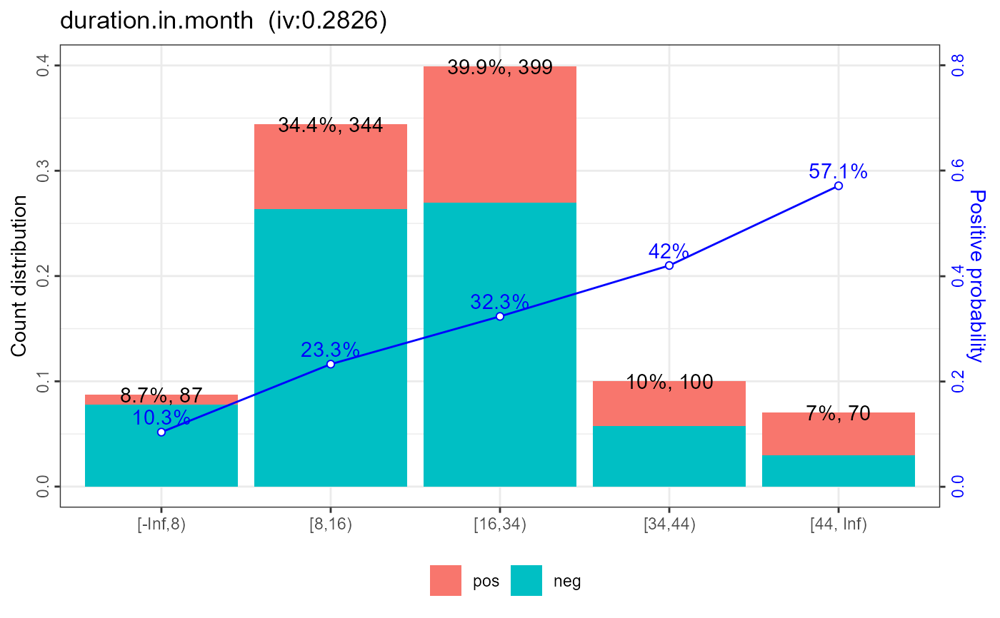
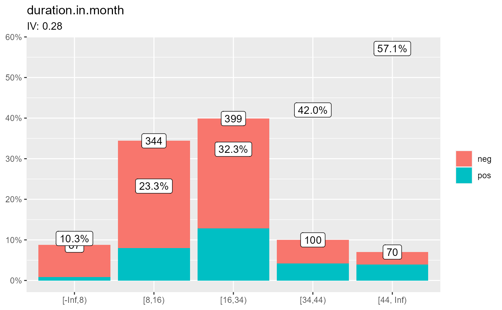
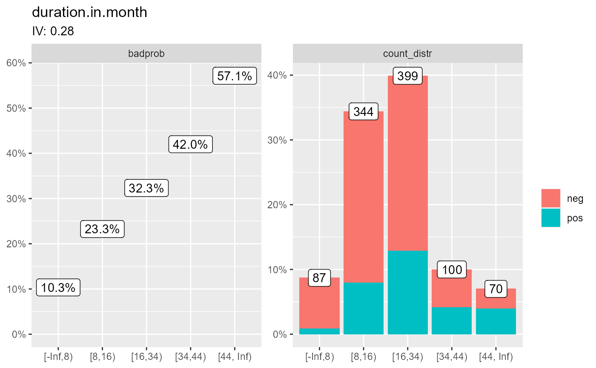

Plot one bin from
bin_plot.RdPlot one bin from
bin_plot(bin = bins[[3]], labels = TRUE, labels_geom = ggplot2::geom_label)
Arguments
| bin | A item from `scorecard::woebin` function. |
|---|---|
| labels | Logical, show text of values (percentages, bad rates). |
| labels_geom | Function to use when add labels, default |
Examples
data(germancredit, package = "scorecard") bins <- scorecard::woebin( germancredit, y = "creditability", x = c("credit.amount", "housing", "duration.in.month"), method = "tree" )#> [INFO] creating woe binning ...bin_plot(bins[[3]])#> $duration.in.month#>gg <- bin_plot(bins[[3]]) ggif (FALSE) { gg <- bin_plot(bins[[3]], labels_geom = ggrepel::geom_label_repel) gg require(ggplot2) ggplot2::update_geom_defaults("point", list(colour = "black", fill = "white", size = 2, stroke = 2)) ggplot2::update_geom_defaults("point", list(colour = "black", fill = "white", size = 5, stroke = 5)) gg gg + ggplot2::facet_wrap(ggplot2::vars(type), scales = "free_y") }